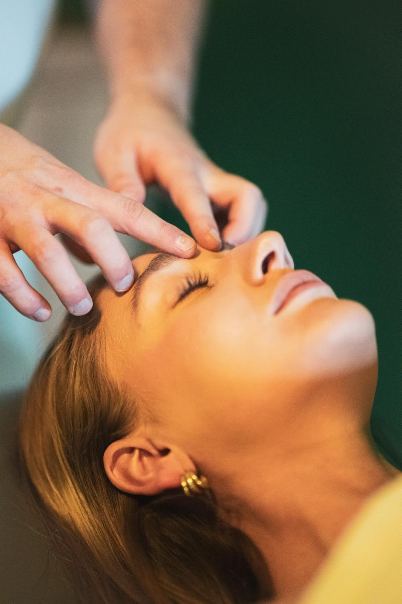
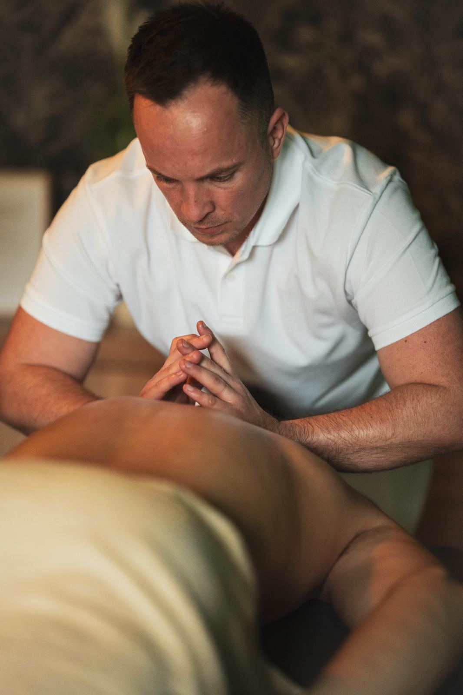
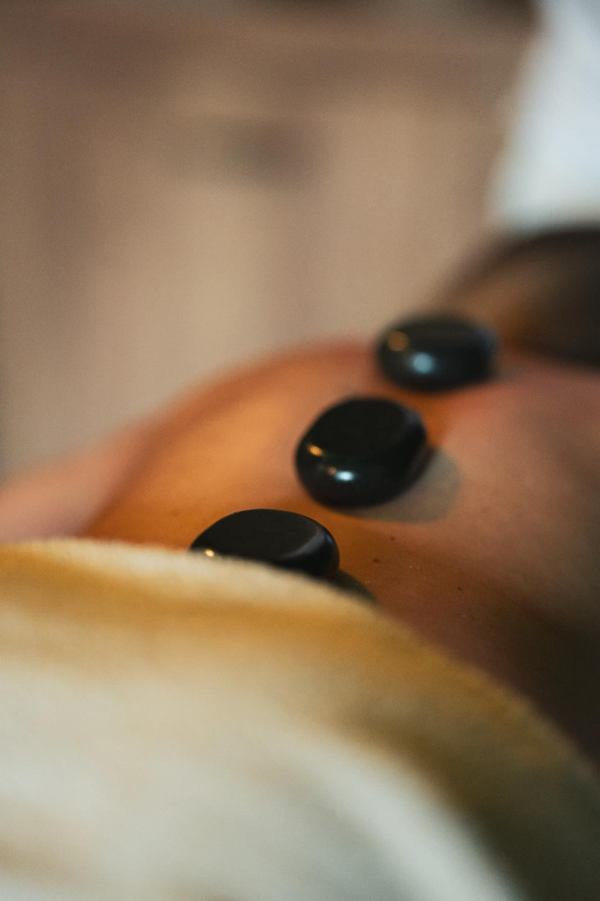
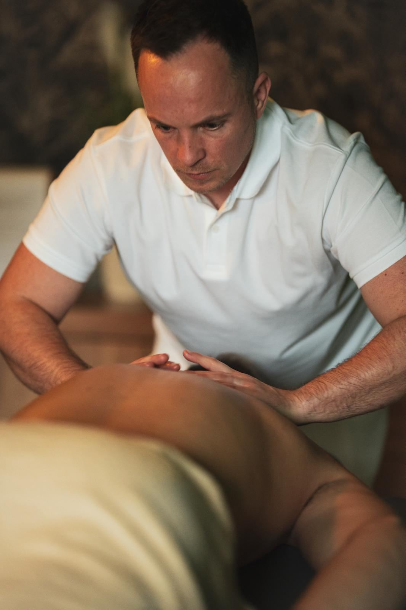
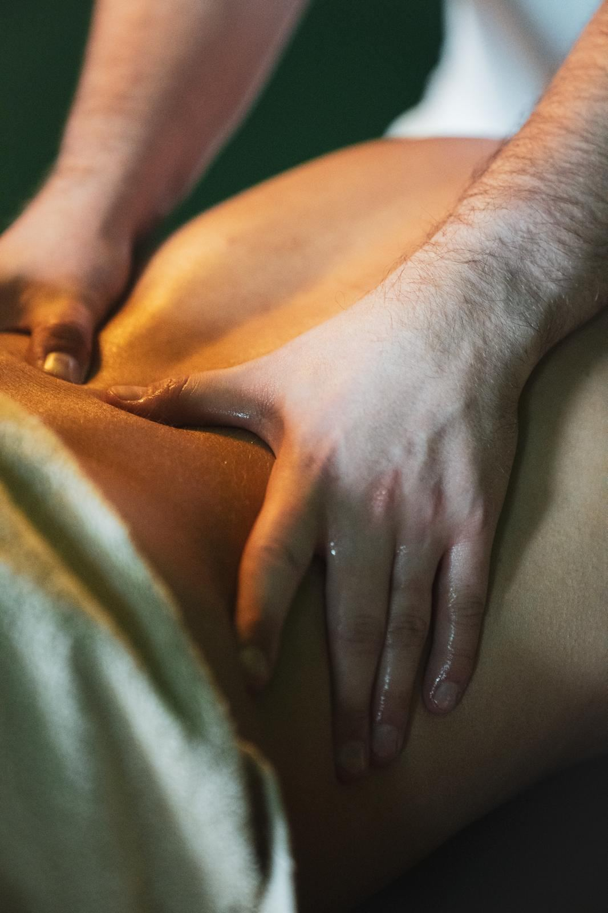
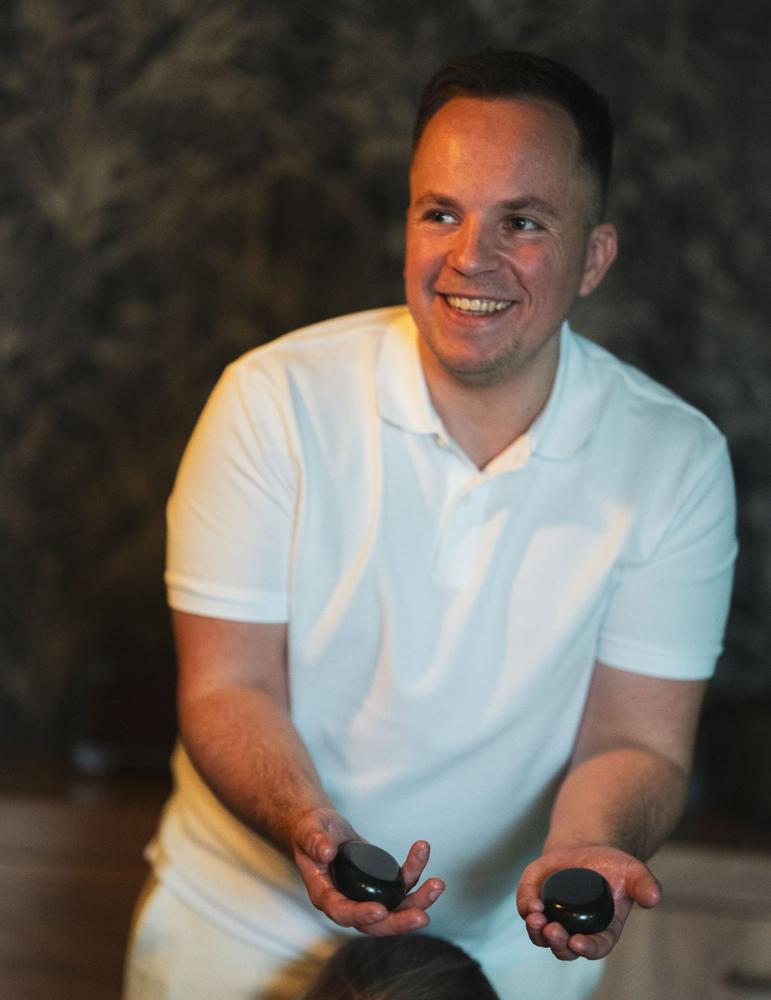

Relaxační masáž
Klidnější tempo, olejová masáž. Když cítíš stres.
- 60 minut — 990 Kč
- 90 minut — 1 290 Kč
- 120 minut — 1 590 Kč

Jeden terapeut, jeden klient, žádný sériový provoz. Nejdřív se ptám, kde to drží. Teprve pak sahám na záda.
Uvolnit, obnovit, vrátit se k sobě.
Masážní studio Uvolni.to
Masáž není wellness dekorace. Je to práce s tím, co si tělo odneslo z posledních měsíců — z kanceláře, z tréninku, ze spánku na špatném polštáři.
Nemám velký salon ani tým masérů. Jsem tu jen já, jedno lehátko a dost času na to, abychom napětí opravdu našli a rozebrali — ne ho jen přejeli.



Studio
Studio je otevřené jen na objednání. Nepotkáš se s nikým jiným, nebudeš na nic čekat a nikdo za dveřmi nečeká na tebe.
Teplo, ticho, jedno lehátko. Devadesát minut, kdy po tobě nikdo nic nechce.
Zeptám se, co tě trápí, kde máš bolest a na co si dát pozor. Dvě minuty, které rozhodnou o celé masáži.
Během prvních minut ladíme intenzitu. Kdykoli řekneš, přitlačím nebo povolím.
60 nebo 90 minut soustředěné práce. Žádné hlídání hodin, žádný spěch na dalšího klienta.
Dostaneš pár konkrétních tipů na doma — protažení, pitný režim, kdy přijít znovu.

O mně
Jmenuji se Lukáš Václavek a masáže dělám proto, že mě baví vidět, jak z člověka během hodiny spadne napětí, které v sobě nosil měsíce.
Tebe pokaždé masíruje ten samý člověk, který si pamatuje, co tě bolelo minule. Podle mě je to ten hlavní rozdíl.
„Masáž, co vás odvane do úplně jiného vesmíru — bez napětí, bez stresu, do naprostého uvolnění a myšlenkového vakua. Je to relaxační bomba pro tělo, mysl i duši.“
Reservio Karin · 26. 8. 2026
„Masáže byly úžasné, zaměřené na moje problémová místa, masér skvělý jak po profesionální stránce, tak i lidsky. Moc útulný a voňavý prostor vymazlený do detailu.“
Google Lucie Ondříšková · červenec 2026
„Využívám sportovní masáže po cvičení či namožených svalech, je to super účinné a uvolňující. Samotné prostředí je také velmi příjemné a navozuje ten správný relax.“
Google Marek Španěl · duben 2026
„Nejlepší místo na masáž a odpočinek, prostě není co dodat. Profesionál v oboru s fakt úžasnou pozitivní energií. Vracím se opakovaně.“
Reservio Alexandra · 16. 7. 2026
Hodnocení i citace pocházejí z veřejných profilů uvolni.to na Mapách Google (5,0 z 5 z 16 recenzí) a uvolni.to na Reserviu (5,0 z 5 ze 24 recenzí), stav k 7. 9. 2026. Texty jsou přepsané doslova, jen zkrácené.
Beru zaměstnanecké benefity — spousta klientů tak za masáž ze svého nedá ani korunu. Stačí to zmínit při rezervaci, nic dopředu nevyřizuješ a platí se až na místě.
Když tu svoji otázku nenajdeš, napiš mi. Odpovím i na to, jestli má masáž ve tvém případě vůbec smysl — a klidně tě pošlu jinam.
Ne. Bolest je informace, ne cíl. Tlak nastavíme během prvních minut tak, aby byl na hraně příjemného, a kdykoli během masáže si můžeš říct o míň. Sval, který se brání, se stejně neuvolní.
U sedavé práce a tuhnoucí šíje obvykle jednou za tři až čtyři týdny. U sportovní regenerace podle tréninkového cyklu. Na konci každé masáže dostaneš odhad, kdy má smysl přijít znovu — někdy je odpověď, že zatím vůbec.
Ano. Přijímám Edenred a Benefit plus. Stačí to zmínit při rezervaci, nic dopředu nevyřizuješ a platí se až na místě.
Nic. Ručníky, prostěradlo i olej jsou tady. Přijď radši o pár minut dřív, ať se dá v klidu projít, co tě trápí, a nekrátí to čas na lehátku.
Ne. Odkrývá se vždy jen partie, na které se zrovna pracuje, zbytek těla je přikrytý. Spodní prádlo si necháváš.
Většinou ano, ale má svá omezení — čerstvá poranění, křečové žíly v místě aplikace, těhotenství nebo onkologická léčba jsou důvod se předem poradit. Napiš mi, co řešíš, a řeknu rovnou, jestli má smysl přijít.
Ulož si mě
Lukáš Václavek Telefon, e-mail, adresa i otevírací doba naráz do kontaktů. Až tě příště chytnou záda, nebudeš to hledat.Skřivanova 335/5 — kousek od Lidické, pár minut od Lužánek. Otevřít v Mapách.